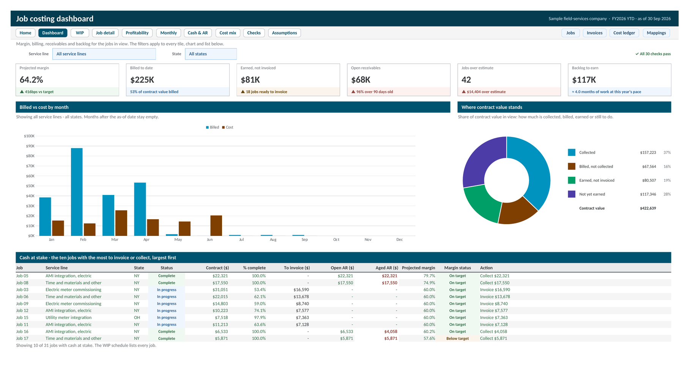

Job Costing and Profitability Tracker
A fifteen tab Excel workbook, with a Google Sheets version, that turns job, invoice, and cost exports into a WIP schedule: percent complete, earned revenue, over and under billing, receivables, and projected margin for every job. A filtered dashboard, a job drill down, and 30 built in checks sit on top.

Three exports go in: the job list, invoice lines, and one cost feed that combines bills, purchase orders, expenses, and labor. Mapping tables send every vendor, item, and account to the right cost bucket and revenue category, so a new spelling in next month's export gets one new row instead of a broken formula. From there the workbook builds a WIP schedule on the cost to cost method, with percent complete, earned revenue, over and under billing, open and aged receivables, and projected margin for every job, plus an Action column that says what to do next: invoice, collect, or re-estimate.
The Dashboard filters by service line and state and leads with six tiles, each with a comparison rather than a bare number: projected margin against target, billed to date, earned but not invoiced, open receivables, jobs over estimate, and backlog to earn. Job Detail opens one job's budget by cost bucket, its month by month progress, and every cost and invoice line behind it. Profitability, Monthly, Cash and AR, and Cost Mix cover margin by service line, job size, and state, billing and collections by month, receivables aging with a chase list, and spend by vendor group and cost code.
A Checks tab runs 30 tests on every refresh: reconciliations that must read zero, data quality counts for unknown jobs, vendors, and accounts, coverage tests that every new item reaches the views, and capacity warnings before an input table fills up. Every failure says where to look. Start Here explains how each number is worked out, the five step monthly refresh, and an optional Power Query load. Every cell uses a named cell style, so inputs, formulas, links, and checks look the same on every tab.
Figures in this sample are real: contract, cost, invoice, and payment amounts come from a job costing export with client, property, vendor, and team names removed. The export carried no estimates, so each job's estimate defaults to the 60% target margin until a real one is typed in. The case study deck walks through how the scattered accounting data became job level profit.